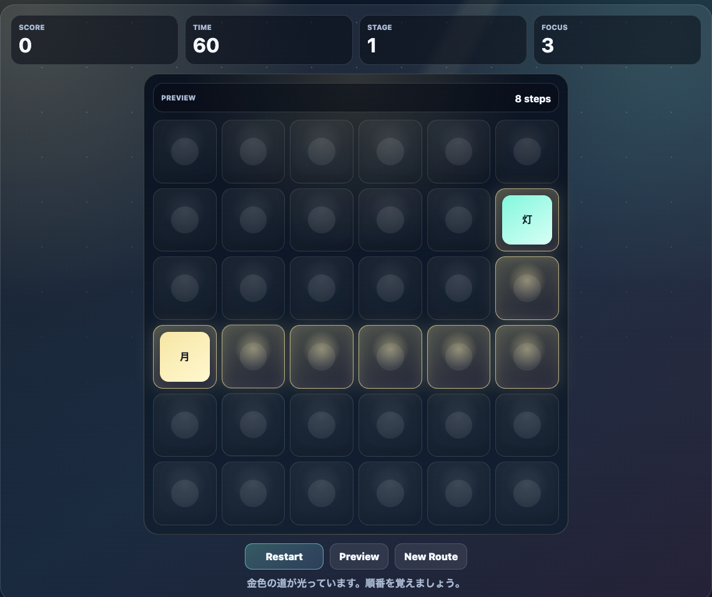

遊び方
- 最初に盤面の道順が金色に光ります。
- 光が消えたら、押したまま同じ順番でマスをなぞります。
- 入力した道は青色に光り、最後までなぞると次のステージに進みます。
記憶力ゲーム / 迷路 / 無料ブラウザゲーム
月影メモリールートは、光った道順を覚えて押したまま同じ順番でなぞる無料ブラウザ記憶力ゲームです。インストール不要で、スマホでもPCでも短時間に集中力と記憶力を試せます。

マスの位置だけでなく「右、下、右、上」のように方向で覚えると安定します。短い道は一気に、長い道は2〜3手ずつ区切って覚えるのがおすすめです。
月影メモリールートは、無料ブラウザゲーム 暇つぶし、記憶力ゲーム、迷路ゲーム、脳トレゲームを探している人向けの短時間ミニゲームです。ルールはシンプルですが、ステージが進むほど覚える道が長くなります。
毎回ルートが変わるため、同じステージでも記憶の仕方が変わります。数十秒で終わりやすく、もう一回だけ挑戦したくなるテンポを重視しています。
はい。無料ブラウザゲーム広場では、インストール不要で無料プレイできます。
スマホ・PC対応です。スマホでは指を押したまま道順をなぞって遊べます。
短時間で遊べるミニゲーム、記憶力ゲーム、迷路パズル、脳トレゲームを探している人におすすめです。
月影メモリールートと近い無料ブラウザゲームを、目的や端末別の入口から探せます。